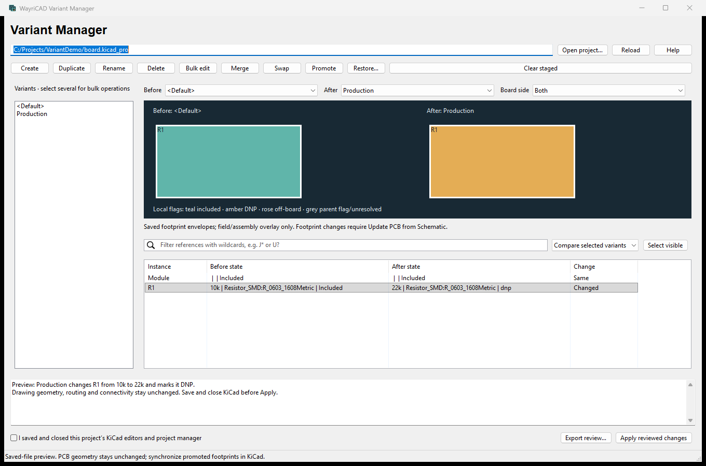

Compare assembly configurations before changing saved native KiCad 10 variant definitions.

The capture shows a generated resistor hierarchy: Production changes 10k to 22k and DNP. Its project path is generic. Rectangles are saved footprint envelopes, not new geometry.
Save your KiCad project and open the plugin. It runs in its own window, allowing KiCad to close before Apply. Choose Before and After configurations. The table shows local component flags, values and footprint fields. Parent-sheet flags are reported separately. Grey board items indicate unresolved reference matches or flagged parent sheets. Top/Bottom/Both filters saved placement sides.
Ctrl/Shift selects several named variants in the left list. Filter component references with J* or U?, then Select visible, or choose exact table rows. Click a board envelope to cross-select its matching table instances.
All staged changes lists every added, removed and changed instance/variant state. Compare selected variants compares saved Before with staged After. The lower panel shows source-file differences. Export HTML, JSON or CSV evidence. Clear staged discards all pending operations.
The board picture uses existing envelopes. It does not regenerate a different footprint size or move copper when its assignment changes. Reused sheet occurrences are identified by UUID and exact hierarchy path, not reference alone.
Save and close the schematic editor, PCB Editor and project manager for this project. Keep Variant Manager open. Tick the acknowledgement and Apply reviewed changes. Source hashes and locks are checked; the validated candidate is applied only after a mandatory verified ZIP backup. A changed source requires reload and a new preview. Backups are in .wayri-variant-backups.
Reopen KiCad afterward. Promoted footprint or presence changes require Update PCB from Schematic and review. This plugin leaves PCB geometry and routing unchanged. Per-file failures roll back; multi-file writes are not power-failure atomic.
Failed staging retains the previous reviewed candidate and its operations, so you can correct the input and retry. Failed Apply retains the review for inspection but disables Apply; reload the saved project and build a new candidate before writing again. Reload discards staged work and clears the old inventory even if loading fails. Apply or clear a staged restore before adding other operations, and apply or clear an existing candidate before staging a restore. A source change since loading disables Apply and clears the closed-project acknowledgement; the review remains available for export, and reload is required before adding operations or restoring definitions. Failed exports retain the staged review and report how to retry with a writable output.
wayricad-variants list PROJECT inventories exact keys. wayricad-variants job PROJECT operations.json previews a batch; --apply --editors-closed --yes is required to write. The CLI also verifies backups and restores selected variants or full source snapshots.
Only existing fields can be edited. Identity/hierarchy fields and unsupported override tokens reject writes. Default promotion cannot reconcile divergent reused-sheet base states. Source restoration rewinds later design edits; inspect its diff. Parent-sheet flags remain explicit. See the full guide for examples and validation evidence.